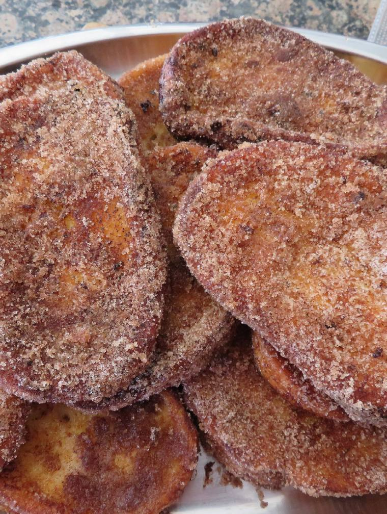

Desserts

Desserts
Torrijas
Le pain perdu de la Semaine sainte
Préparation : 20 min
Cuisson : 20 min
Ingrédients (pour 4 personnes)
- 1 pain à torrijas de la veille
- 1 l de lait
- 500 g de sucre
- 8 œufs
- 500 g de miel
- huile d’olive pour frire
Quantités adaptées. Les temps de cuisson ne sont pas recalculés.
- Couper le pain en tranches épaisses.
- Mélanger lait et sucre dans un plat creux, battre les œufs dans un autre.
- Passer les tranches dans le lait puis dans l’œuf.
- Les frire dans l’huile chaude jusqu’à ce qu’elles soient bien dorées, égoutter.
- Arroser de miel, et du reste de lait sucré porté à ébullition pour plus de moelleux.
AstucePas de miel avant un an.
D’après Spain.info, office espagnol du tourisme. Traduit et reformulé, lait de trempage bouilli avant d’être servi.